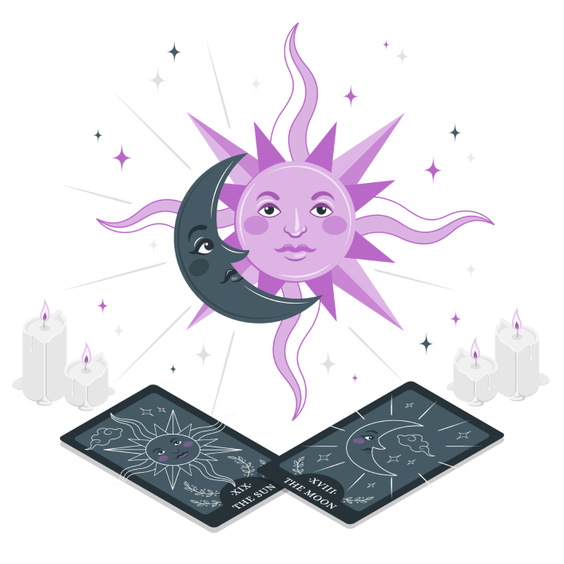

Поможет ли Таро в решении финансовых вопросов?
Точность теста – 97%!  Время прохождения ~ 5 минут.С помощью теста вы узнаете истинные причины проблем в сфере финансов и карьеры. И как в этой ситуации поможет изучение Таро!
Пройти тест- 11 К+ женщин прошли этот тест
- 97% подтвердили достоверность результатов
- 78% решили проблемы с финансами благодаря Таро, применив рекомендации по результатам теста.
- 01 У вас есть долги и нет понимания, как от них избавиться;
- 02 Вы хотите увеличить доход или пробить финансовый потолок;
- 03 Вас интересует Таро, но вы не уверены, что карты смогут дать ответы на вопросы по финансам;
- 04 Вам надоела работа, но страшно что-то менять из-за имеющихся обязательств.
ПОЧЕМУ ТЕСТ ТАК ЭФФЕКТИВЕН?
- Это авторский тест Ирэны Ивановой — таролога с 34-летним стажем.
- Она провела более 10 тысяч Таро-консультаций по вопросам карьеры и финансов разной сложности.
- Опросник теста также сформирован Ирэной. Как профессиональный маг, она точно знает, какие вопросы помогают определить эффективность Таро в каждой конкретной ситуации.
- Как опытный наставник, Ирэна знает, как быстро разрешить любую проблему с помощью Таро.
- Поэтому под каждым результатом она делится своими рекомендациями, чтобы помочь выйти на новый финансовый уровень и улучшить свою жизнь в разы!
АВТОРСКИЙ ТЕСТ ИРЭНЫ ИВАНОВОЙ!
ГЛАВНОЕ ОБ ИРЭНЕ:- Таролог №1 в России
- Таро-диагност с 34-летним стажем
- Более 50 000 проведенных таро-консультаций
- Основатель уникальной школы TARO IRENA school, выпустившей более 4000 учеников
- Опытный эзотерик
- Создатель уникальных предметов силы
Результат теста:
- понимаете истинные причины своих финансовых трудностей;
- знаете, как Таро поможет
их разрешить; - знаете, как воплотить в жизнь
финансовые цели с помощью карт Таро; - имеете план действий
по внедрению Таро в вашу жизнь!
Механика теста:
На каждый вопрос дается 3 варианта ответа:- Часто
- Иногда
- Никогда
и узнать результат
ОТЗЫВЫ О ТЕСТЕ
-
Александра
У меня немного баллов. Я так и предполагала. Нет у меня веры в себя, очень сложно решиться сменить работу. Чувствую себя неуверенно, синдром самозванца. Хоть и занимаю неплохую должность. Удивительно, какой точный тест. Буду работать над собой. Теперь ведь есть для этого инструменты. Огромное вам спасибо!
-
Мария
Вот откуда это постоянное чувство недостаточности. Я уже проговариваю аффирмации))) Очень хочется поменять уже все в жизни. А теперь я вижу, как много могут дать Таро, как много вопросов решить. Буду всем рекомендовать этот тест. У меня много знакомых, которым это точно необходимо!
-
Светлана
Очень точно! Огромное спасибо вам за этот тест. У меня не такая уж плохая ситуация, но все же очень хочется теперь стремиться к самому высокому уровню жизни. Оказывается Таро - это то, что мне нужно, зря сомневалась. Особая благодарность за рекомендации! Уже выполняю!
-
Кира
Благодарю сердечно за тест ❤️❤️❤️ Результатом не удивлена, так и чувствовала, прямо в точку! Теперь знаю, что делать дальше, чтобы изменить ситуацию. Мне очень помогли советы. Буду действовать! И всем рекомендую!
-
Маргарита
Большое спасибо за тест!! Второй год думаю открыть свой бизнес но не решаюсь никак, нет поддержки и не на кого опереться. А тут увидела что Таро способны помочь во всех вопросах, которые меня тревожат и я могу исполнить свою мечту - зарабатывать и сразу такая мотивация!! Как волшебный пинок от вселенной чтобы начать действовать!!
-
София
Крутой тест, прямо не ожидала, что так точно будет описано мое отношение к деньгам и мои отношения с ними 😂 Никогда не понимала, как люди зарабатывают на лайте и что это такое вообще. Сейчас все встало на свои места! Благодарю за рекомендации, Ирэна!
-
Елена
Спасибо за точный тест Ирэне ❤️ Мне на самом деле всегда мешали внутренние страхи, всегда думала, что не справлюсь, не смогу, не потяну. В результате в 44 года живу на минимум, хотя столько всего было в планах и столько заработать! Спасибо, что напомнили, что я способна на большее ❤️